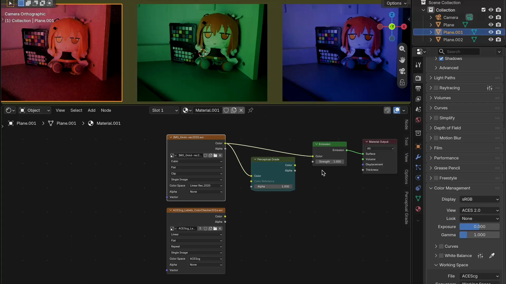
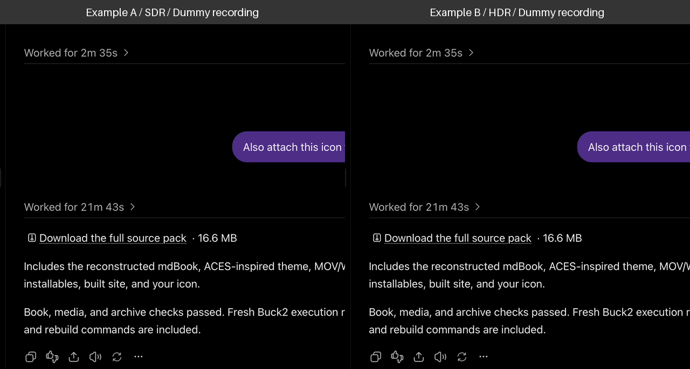

Introduction
A maintained handbook: this publication aims to keep up with the latest Perceptual Grade. Its User Manual describes the 1.23.2 interface and workflow; those instructions, host recordings, and much of the runtime engineering text still lag behind the current reference. Downloads and measurements retain their original version and scope. Chapters identify the product or model they describe.
Perceptual Grade connects white balance, a custom tone curve, and selective color adjustments in three stages. Blender implementations provide nodes for Shading and Compositing; the retained DCTL runs in DaVinci Resolve. Their available controls and Stage 3 policies differ from the latest reference, so check the implementation profile when reproducing a grade.

The download is a Perceptual Grade 1.23.2 development build dated 2026-11-01. It packages the preserved Perceptual Grade implementation, not Perceptual Grade Next, and replaces the original extension download. Installation and the everyday workflow below retain the 1.23.2 interface; they have not been updated for Next or the current reference’s Warp controls.
Start with installation, then grade in three stages. Choose your white and color directions in Linear, place important scene tones in Tone, and refine lightness, chroma, adaptance, and hue in Color. The Technical Report covers the current analytical model, its calculations, and the engineering behind the implementations.
See the credits for appearance-model papers and implementation references, and the license for licensing.
Install and connect
Preserved release: this usage chapter and its captures describe 1.23.2 and still lag the latest model. See Understanding the model for the current reference; these controls do not describe Next’s future Warp implementation.
Blender Extension
Download the development extension ZIP, perceptual_grade-v1.23.2-20261101.zip. This is the Perceptual Grade 1.23.2 development build dated 2026-11-01, using the preserved implementation rather than Perceptual Grade Next. It replaces the original extension download. This chapter describes the legacy 1.23.2 workflow and has not been updated for the development build.
In Blender, open Preferences, choose Add-ons, then use the menu’s Install from Disk command. Select the ZIP and enable Perceptual Grade. In a Shader or Compositor editor, choose Add → Color → Perceptual Grade. Select the node to open its Perceptual Grade sidebar.
Install from Disk and the enabled Perceptual Grade extension.
Connect a material in Shading
Connect Image Texture’s Color output to Perceptual Grade’s Color input. Connect the graded Color to the material input you want to grade, such as Principled BSDF’s Base Color; keep the shader connected to Material Output. For an unlit image preview, connect the graded color to an Emission shader instead.
Image Texture → Perceptual Grade → shader → Material Output. Show the node sockets and image together.
Connect an image in Compositing
Enable Use Nodes in the Compositor. Connect Image or Render Layers’ Image output to Perceptual Grade’s Color input, then send the graded Color to the next compositing operation or the output. Add a Viewer connection to inspect the result while dragging the controls. Render once before sampling Render Layers.
Image or Render Layers → Perceptual Grade → output, with a Viewer branch.
Set each source image’s Color Space to its actual encoding so Blender decodes it correctly. Leave Color Reference unconnected for now; the ColorChecker example introduces it.
DaVinci Resolve DCTL
Download the English DCTL or Simplified Chinese DCTL. In Project Settings → Color Management → Lookup Tables, choose Open LUT Folder. Copy the file there and choose Update Lists. On the Color page, add the DCTL Resolve FX effect to a serial node and select Perceptual-Grade.
the installed file, Update Lists, and the DCTL effect's file selector.
Place explicit CSTs around the DCTL
Use an unmanaged DaVinci YRGB project. Add three serial nodes:
The first node is an input Color Space Transform. Set Input Color Space and Input Gamma to match the footage, Output Color Space to CIE XYZ, and Output Gamma to Linear.
Place Perceptual Grade on the second node. It receives and returns linear XYZ; set Destination White to the white represented by that signal.
The third node is an output Color Space Transform. Set Input Color Space to CIE XYZ and Input Gamma to Linear, then choose the output space and gamma for your monitoring or delivery transform.
For a D65 chain—such as Rec.709 SDR or Rec.2020 PQ footage converted to XYZ—use Destination White = D65. Keep D65 consistent through the return CST. For an ACES-white XYZ chain, use Destination White = ACES. For an explicitly daylight D60 chain, choose D60 daylight; it has different coordinates from ACES white. XYZ itself does not specify a white point: match the conversion you actually used, not the name of the camera or the image’s tint. Source White is the grading control for removing that tint.
For the illustrated D65 chain, turn off Use White Point Adaptation in both CSTs so the conversions retain that white. If you deliberately adapt to another white, set Destination White to the adapted signal’s white instead. A D65 neutral in XYZ has and ; use a neutral patch to check the conversion before grading.
input CST, DCTL Destination White, and output CST, with the three-node chain visible.
Keep automatic tone mapping, gamut mapping, Apply Forward OOTF and Apply Inverse OOTF disabled in the conversion CSTs when setting up the grade. Use a deliberate downstream display transform for HDR-to-SDR monitoring. Check the linear signal’s scale: the DCTL treats as Reference Nits. A conversion normalized to a different luminance needs an explicit scale adjustment before the DCTL and the inverse adjustment afterward.
The demonstrations use the Perceptual Grade extension’s gizmos in Blender. Resolve users reproduce each operation with the concrete DCTL slider names listed beside it.
The Grade selector starts empty. Your first grading edit creates a reusable Grade; see Share and reuse Grades for linking nodes and making independent copies.
Grade in three stages
Preserved release: this usage chapter and its captures describe 1.23.2 and still lag the latest model. See Understanding the model for the current reference; these controls do not describe Next’s future Warp implementation.
Follow two images through the same sequence. Example A is SDR; Example B is HDR. They stay on the left and right throughout the book. Each pair demonstrates the same control with a different grading intention.
Start by neutralizing the light and balancing exposure in both images. Refine the SDR image’s muted color relationships while preserving the HDR image’s separation between diffuse surfaces and bright highlights. In Tone, build an S-shaped contrast curve for A and use a gamma-like curve to open darker areas in B. Carry those choices into Color, where the same controls refine each image’s own tonal distribution.
Every demonstration starts with the previous demonstration’s result. Keep the same images, crop, view transform and exposure settings across the sequence; carry the completed Linear and Tone adjustments into all six Color operations. The side-by-side animations compare two examples, not a before/after split.
In Linear, make what should look white actually white, then check exposure and color relationships against the chart. In Tone, shape contrast and open the shadows, then compare the SDR and HDR waveforms. In Color, shape lightness, chroma, Adaptance and hue within selected tonal regions.
The square recordings show each image beside the Perceptual Grade extension’s gizmo in Blender. They loop at their recorded speed; if one adjustment finishes earlier, its final frame waits for the other. Each pair repeats automatically after a short final-frame hold.
These are screen recordings of SDR and HDR source images, both encoded for the web as sRGB. The HDR example demonstrates grading and scope behavior; this web page does not reproduce an HDR display’s peak luminance.
Panels labelled Dummy recording still use the bundled temporary clip. The accompanying lesson describes the intended operation; the label disappears automatically when its source recording is replaced.
Linear
Preserved release: this usage chapter and its captures describe 1.23.2 and still lag the latest model. See Understanding the model for the current reference; these controls do not describe Next’s future Warp implementation.
Linear correction gives the image a sound starting point before creative grading. It corrects the lighting cast and broad color relationships across the whole image, so Tone and Color can shape the look without compensating for an unwanted tint. Global Exposure raises or lowers the overall level; establish a useful level, then work through white balance and the relationships below.
Balance white and color relationships
Source White is the familiar white-balance adjustment: make what should look white actually white. Find a surface that should be neutral under the intended lighting, such as white paper, a gray card or a neutral chart patch. Judge the surface and its scope trace together; a colored object is not a white reference.
In each example, first drag the extension’s Linear vectorscope until the neutral surface loses its unwanted cast. Reset Source White to its starting position, then repeat the correction by dragging the source-white point directly. These are two ways to make the same adjustment. Keep the correction from the second pass for the next demonstration.
In Resolve, use the Perceptual Grade DCTL’s Source White = Custom xy setting, then adjust Source White x and Source White y. These sliders reproduce either gesture. Leave Destination White at the value established by your CST setup.

Balance changes the relative brightness of opposing colors while keeping the established white fixed. Increasing Cyan-Red Balance brightens cyan relative to red; increasing Yellow-Blue Balance brightens yellow relative to blue. This is useful when the neutral surfaces look right but one side of a color relationship feels too bright or too heavy.
Spread and Heading change those relationships in a different way. A wider Spread generally makes colors in that direction more saturated; a narrower Spread brings them toward white. Heading turns the direction, steering hue. All six controls preserve the established white, so these adjustments do not undo the white balance.
Continue from the first demonstration and use both Balance handles, both Spread handles and both Heading handles. In A, balance opposing color brightness, widen muted color relationships and refine their hue. In B, balance different brightness relationships, restrain stronger color and refine its hue. Watch the whole image as each relationship changes.
In the DCTL, the six corresponding sliders are Cyan-Red Balance, Yellow-Blue Balance, Cyan-Red Spread, Yellow-Blue Spread, Cyan-Red Heading and Yellow-Blue Heading.

Example: match a photographed ColorChecker
Continue from the Linear pass. Use a photographed ColorChecker under the lighting you are correcting, and the ColorChecker2014 EXR as the reference. The reference is ACEScg: set that explicitly on its Image Texture or Image node. Set the photograph’s own input encoding correctly too.
Connect the photograph to Color and the EXR’s Color/Image output to Color Reference. Crop and orient the photographed chart like the EXR, with as little background as practical. The grade applies to Color; Color Reference supplies an independent comparison trace.
The photograph and ACEScg EXR image nodes, both connections, and the Linear vectorscope with its reference trace.
Compare the neutral patches first. Refine Source White and Global Exposure, then use the Balance, Spread and Heading handles to bring the colored-patch readings toward the reference. Watch several patches at once: a single global matrix is a compromise, and lighting, glare and camera rendering can prevent an exact match. Carry the resulting correction into Tone.

The red reference trace is drawn over the main trace in Linear. A click on a blank scope or Tone-curve area toggles reference visibility across stages; dragging the Linear vectorscope adjusts source white. Click and drag have different purposes.
In Tone, the reference appears on the After waveform and curve histogram. In Color, the waveform and vectorscope show corresponding positions for the selected input-tone region. Histogram heights are normalized independently, so their heights are not an exposure measurement.
The extension’s waveform measures perceptual lightness, while its vectorscope shows displayed Rec.709 signal chroma. Resolve’s native scopes use their selected host scale. For Resolve, compare the photograph and reference through matching CST and display chains, then use the same named Linear sliders above; the DCTL does not have the extension’s Color Reference socket.
For scope sampling, flat images, Render Layers color passes, RGB constants, reroutes and Perceptual Grade chains are supported. Render first for Render Layers; use a baked image when a procedural network cannot be sampled.
Tone
Preserved release: this usage chapter and its captures describe 1.23.2 and still lag the latest model. See Understanding the model for the current reference; these controls do not describe Next’s future Warp implementation.
Keep the completed Linear adjustments in A and B. Now shape the tonal relationships for each image’s purpose: stronger contrast in A, and more readable dark areas in B.
Shape contrast and open the shadows
Use the same Tone landmarks for different purposes. In A, lower darker tones and lift brighter tones to form an S-shaped contrast curve. In B, lift dark and middle regions into a gamma-like shape while holding white and the brightest highlights close to their established relationship.
Drag a landmark on the Before waveform, or move its curve dot horizontally, to identify the input tone that should map toward that landmark’s target. The After waveform shows the result. Moving an input landmark right asks a higher input level to reach the same target; moving it left asks a lower level to reach that target. The curve blends these requests smoothly.

In Resolve, the Perceptual Grade DCTL uses Input Black Nits, Input Shadows Nits, Input Midtones Nits, Input White Nits and Input Highlights Nits for the five landmarks. Remap Fit changes the curve fit. Reference Nits sets diffuse-white calibration, and Peak Anchor Nits sets the bright anchor.
These Nits inputs describe a neutral with the selected lightness. Read the resulting curve and waveform instead of expecting a hard pin through every landmark. After placing the levels, adjust Remap Fit to spread transitions more broadly or concentrate them around the landmarks.
Compare SDR and HDR on the waveform
In Example A, look for the dark areas, midtones and a diffuse white such as paper. An SDR image commonly groups these below or around the reference-white line. Its bright detail may occupy only a narrow band near that line.
In Example B, identify a similar diffuse surface and then a brighter light source, window or specular reflection. The HDR waveform can place that bright feature well above diffuse white while the surface and midtones remain much lower. Compare these distinct regions; a bright peak is not the image’s average tone.
A shows the SDR image and its compact tonal range; B shows the HDR image, diffuse white and clearly separated brighter highlights. Use the same waveform scale and label those features.
The reference-white line is , or in the lightness readout. With the default Reference Nits of 203, it represents a 203-nit neutral. The graph extends to the lightness of a 4000-nit neutral even when the grade uses a lower Peak Anchor Nits. The extension’s perceptual waveforms use this lightness scale; Resolve’s native scopes use the scale selected in Resolve.
That shared scale explains the empty headroom in A. Do not move ordinary midtones upward just to fill it. In B, leave a useful separation between diffuse white and the genuinely bright features rather than treating the brightest peak as ordinary white.
Keep the completed curve while moving on to Color.
Color
Preserved release: this usage chapter and its captures describe 1.23.2 and still lag the latest model. See Understanding the model for the current reference; these controls do not describe Next’s future Warp implementation.
Keep the Linear and Tone results. Each operation below adds to the preceding one in both examples; do not reset between recordings. A stays SDR, B stays HDR. In Resolve, use the named Perceptual Grade DCTL sliders given beside each demonstration.
Select a tone with its curve dot, S/M/W/H label or waveform indicator. The curve height is the strength of an adjustment, not a final pixel value. Cₗ favors lower-chroma colors and Cₕ favors higher-chroma colors, with smooth weights. The scope shows the selected input-tone region after grading.
Lightness J curve: two tones in each image
Choose Lightness J and the Cₗ curve. In A, open Shadows and give White a little more presence. In B, open Midtones and restrain Highlights. Both images use the same kind of handle twice, on two tonal regions, to serve different purposes.

DCTL sliders: A uses Shadows Cₗ → J and White Cₗ → J; B uses Midtones Cₗ → J and Highlights Cₗ → J. Choose the corresponding Cₕ → J slider when working on higher-chroma colors instead. Lightness Fit controls how broadly the tonal coefficients blend.
Lightness J and Chroma C curves: one shared tone
Select Midtones in both examples. Adjust the Cₗ → J curve, then switch to Chroma C and adjust Cₗ → C without changing that tone selection. A can lift a muted subject and add color; B can lower an overly prominent midtone and soften its color. The two receivers work together on the same tonal region.

DCTL sliders: Midtones Cₗ → J and Midtones Cₗ → C. The corresponding higher-chroma controls are Midtones Cₕ → J and Midtones Cₕ → C. In a fully weighted chroma contribution, +1 doubles C and −1 halves it. Chroma Fit shapes the tonal reach; Global C Gain changes chroma across all tones.
Lightness J and Chroma C a/b pads: one shared tone
Keep Midtones selected in both images. In the Lightness J pad, move the handle to raise one hue direction while lowering its opposite. Switch to Chroma C and shape the color strength along the same direction. A might emphasize a subject against its background; B might reduce a competing color while retaining the subject. These are paired J and C adjustments to the same tone in each image.

DCTL sliders: Midtones a → J, Midtones b → J, Midtones a → C and Midtones b → C. Diagonal pad movement combines a and b. On the extension’s pads, +a points upward and +b points leftward, matching its vectorscope orientation.
Adaptance pad: two tones in each image
Choose Adaptance. In A, reduce a cast in Shadows, then refine White. In B, correct Midtones, then refine Highlights. Watch a surface that should stay near-neutral in each region while moving each tone’s pad handle.

In the DCTL, A uses Shadows Adaptance a, Shadows Adaptance b, White Adaptance a and White Adaptance b. B uses Midtones Adaptance a, Midtones Adaptance b, Highlights Adaptance a and Highlights Adaptance b.
Adaptance Strength controls the amount and chroma protection; Adaptance Fit controls the tonal blend. The pad’s mean cross and confidence range describe sampled near-neutral pixels, enlarged 5× to make small casts visible.
Hue concentration pad: two tones in each image
Choose Hue and use its a/b concentration pad. In A, gather a distracting spread of hues in Shadows, then refine White. In B, gather hues in Midtones, then refine Highlights. Concentration draws hues toward the chosen direction and opens their spacing on the opposite side.

DCTL sliders: A uses Shadows Hue Concentration a, Shadows Hue Concentration b, White Hue Concentration a and White Hue Concentration b. B uses Midtones Hue Concentration a, Midtones Hue Concentration b, Highlights Hue Concentration a and Highlights Hue Concentration b.
Hue rotation: two tones in each image
Use the Hue rotation curve to turn colors together within a tone region. In A, steer Shadows toward one palette and White toward another. In B, steer Midtones and Highlights independently. Rotation turns the hue wheel; the preceding concentration operation changes the spacing around it.

DCTL sliders: Shadows Hue and White Hue for A; Midtones Hue and Highlights Hue for B. Hue Fit controls how both rotation and concentration blend across tonal regions. Revisit the complete image after each adjustment, with all earlier work retained.
Try a broader creative grade
Experiment with Global Cₗ → Hue and Global Cₕ → Hue yourself. They rotate lower- and higher-chroma colors with smooth weights across all tones. Combine them with the tonal controls to explore a more stylized palette.
Share and reuse Grades
Preserved release: this usage chapter and its captures describe 1.23.2 and still lag the latest model. See Understanding the model for the current reference; these controls do not describe Next’s future Warp implementation.
A Grade stores the Stage 1 matrix, Working White, Tone and Color settings used by the extension. Select the same Grade on several nodes to adjust them together, including Shader and Compositor users and Grade Stack entries.
The displayed node titles are Grade and Grade Stack. The extension, sidebar and Add-menu product names remain Perceptual Grade.
Start with an empty selector
A new Grade node has an empty selector and default settings. The first change to a handle, numeric grading value or Working White creates a Grade automatically. Names start at Grade.001, then Grade.002, and so on.
Opening or closing the diagram, reading scopes, choosing a handle, switching pages or changing Render Method does not create a Grade. Cancelling the first handle drag returns the node to its empty state.
The selector appears on the node and at the top of its Perceptual Grade sidebar. Choose an existing Grade to apply its settings immediately. Later edits affect every user of that Grade.
The node’s pencil opens its diagram without using the sidebar. Clicking the pencil on another Grade selects that node and shows its diagram; clicking the highlighted pencil hides it. Highlighting follows the actual diagram in that editor, including the sidebar’s Show/Hide Diagram control and the diagram’s close button. The pencil uses the same symbol as a Grade Stack entry. At most one pencil is highlighted in each Shader or Compositor editor, across all Grade nodes and Stack entries, even when they share the same Grade. Switching the target clears the previous highlight. Showing a diagram does not create or duplicate Grade data.
Ordinary Grade nodes always apply the Grade forward. Render Method appears in the sidebar. Working White appears only in the Stage 1 controls and belongs to the shared Grade. To use an inverse, add a Grade Stack entry and enable its inverse toggle.
Make a variation
Use New Grade while a Grade is selected to make an independent copy. The copy starts with the selected Grade’s values and receives a unique name. Further adjustments affect users of the copy.
For example, select Warm scene on two materials and on a compositor node. Editing exposure from any of those nodes updates all three. To make one material darker independently, create a new Grade on its node, rename the copy Warm scene – darker, and adjust its exposure.
Ordinary duplication of a node or material keeps the Grade shared. Use New Grade when the duplicated node should diverge. A Stack’s pencil also edits its shared Grade; creating a Stack does not make its referenced Grades independent.
Rename, unlink and retain
Edit the name in the selector to rename a Grade. Every user shows its new name.
The selector’s × unlinks the Grade from an ordinary node and restores that node’s default grading values. Render Method stays selected on that node. In a Stack, the selector’s unlink control clears the entry’s Grade reference; the entry-removal × removes the whole entry. Shared Grade data is retained.
New Grades have Blender’s fake user enabled so an unused Grade remains available after saving and reopening. Turn off the shield/fake-user control when an unused Grade should follow Blender’s normal orphan-data cleanup rules.
Shared values and local choices
| Stored in the shared Grade | Stored on the node, entry or editor |
|---|---|
| Stage 1 matrix and its recorded white; selected Working White | Ordinary Grade node’s Baked LUT / Direct method |
| Tone landmarks, Remap Fit, Reference Nits and Peak Nits | Stack entry’s enabled state, forward/inverse choice and position |
| Color contributions, Adaptance, hue and concentration | Connections, selected handles, diagram placement and active editing entry |
| Animation of shared grading parameters | Node name, label, width and layout |
Keyframing a grading parameter animates the Grade for all its users. Linear auto-keying records the nine matrix coefficients; its controls are derived readouts. Interpolation follows matrix coefficients. Changing Working White retains the recorded matrix-animation basis and applies the white conversion to every evaluated frame. Making an independent copy also copies its active animation Action independently.
Saving and rendering
Normal saves store native Shader and Compositor group representations with current evaluated settings. The selector returns when the extension is enabled. These graphs can render their saved appearance without the extension. Live editing, animated updates and adapting saved graphs to a changed working space require it. Recovery files or autosaves that capture custom nodes should be opened with the extension enabled.
Working White defaults to D65 in every scene space. See working white, render methods, and editing Grades inside a Stack.
Choose a working white
Preserved release: this usage chapter and its captures describe 1.23.2 and still lag the latest model. See Understanding the model for the current reference; these controls do not describe Next’s future Warp implementation.
Working White belongs to the shared Grade and always defaults to D65, including in an ACEScg project. It stays as selected when Blender’s working space changes. Open Stage 1 in the sidebar to change it. For a Stack, first click an enabled entry’s pencil. Every user of that Grade updates.
The choices match the DCTL presets: D65, D60 daylight, ACES, D50, D55, D75, DCI white and Equal energy E. Blender does not offer custom xy for this setting. ACES white and daylight D60 have slightly different coordinates and are separate choices.
What the white means
The appearance model’s reference white describes the adaptation context used for grading. It is separate from the RGB primaries used to store the scene and from the white of the final display. D65 is a consistent default across projects; the extension does not infer it from the monitor, view transform or scene gamut.
For example, with ACEScg scene data and a D65 Grade, the extension converts scene RGB to XYZ and uses Bradford adaptation from ACES white to D65 before the three grading stages. It adapts the result back to ACES white and returns ACEScg RGB. Equal-channel scene neutrals reach the appearance model as D65 neutrals, rather than as unadapted ACES-white stimuli viewed against D65.
The node still grades scene-linear values before Blender’s view transform. Selecting D65 does not move grading after tone mapping or turn the node into a display-referred operation. It also does not override the creative white or display encoding chosen by an ACES Output Transform. A monitor’s white alone does not determine every upstream appearance-model white. ACES documents its creative-white and display-encoding choices separately.
Use the default D65 for a consistent grading context, or choose another preset deliberately. Judge the result through the intended view transform and display configuration.
What changes when you switch
| Change | Result |
|---|---|
| Blender’s scene working space | Scene adapters change. The shared Grade’s matrix, white and Tone/Color settings stay unchanged. |
| The Grade’s Working White | Stage 1 is expressed in the new white context. Its derived controls may change; its color correction is preserved. Tone/Color values stay unchanged, so their nonlinear appearance may change. |
| A Grade used in several nodes or Stacks | All users update. Make an independent Grade copy first when only one use should change. |
Switching Blender’s working space preserves grading for equivalent colors, meaning that the input RGB values must also be converted by Blender. Reusing the same three numbers in a different RGB space describes a different color. Floating-point and interpolation precision still apply.
The extension stores Stage 1’s matrix with its reference white. Its Linear controls are derived editing views, rather than independently stored grading values. A singular or otherwise unrepresentable matrix can have approximate control readouts; the node indicates this and retains the actual matrix. Reset Linear restores the identity matrix.
Three different uses of white
Bradford connects the scene and Grade white contexts and connects different whites in a Stack. Blender’s native scene-color conversion supplies the gamut and white adaptation at the scene boundary.
Source White remains a creative CAT16 correction inside Stage 1. Matching Source White to the Grade’s Working White makes that adaptation neutral. Changing Source White is an artistic adjustment; it does not change the Grade’s Working White.
The red and blue control references retain the existing construction: first CAT16-adapt Rec.709 red and blue from D65 to the Grade white, then place each anchor at 30% of its adapted xy displacement from that white. They are not fixed around D65 when another working white is selected.
LUTs, Stacks and saved files
A fixed internal linear RGB basis keeps the LUT sampling grid independent of Blender’s scene gamut. Ordinary nodes keep Stage 1 outside their nonlinear LUT. A Stack evaluates every complete grade analytically, including its white handling and Stage 1, before baking the single LUT (33³ preview, 65³ final). The outer scene-coordinate matrices are not additional grading stages or additional LUTs.
Changing a Grade white automatically invalidates affected LUTs. Switching only Blender’s working space updates the surrounding matrices and reuses the same grading LUT. Alpha passes through unchanged and RGB is not clipped at the conversions.
Saved native graphs retain their evaluated appearance without the extension. Live edits, animation updates and adapting those graphs after a working-space change require the extension to be enabled.
The DCTL keeps its own Destination White behavior. It does not automatically convert a stored correction matrix when that setting changes.
Which white does a baked LUT use?
Every production LUT uses fixed native linear ACEScg / ACES-white input and output coordinates, even in a Rec.709 or Rec.2020 scene. This sampling white is separate from each Grade’s chosen white, which still defaults to D65. The 65³ grid covers 0…1024 with 64 positive intervals and plain log1p κ = 0.01; 33³ previews use 32 intervals on the same axis. Original signed inputs and outputs are retained. Inputs outside the grid hold the nearest edge cell’s value rather than extrapolating, because the interpolation fraction is clamped; Direct and sampled evaluation gives the details and notes where the legacy generator differs.
Let convert the current scene RGB to this fixed AP1/ACES-white basis, including gamut conversion and Bradford adaptation. Its inverse returns to scene coordinates. These matrices are combined where possible; they are not additional LUTs.
| Node | Before the LUT | Baked content | After the LUT |
|---|---|---|---|
| Ordinary Grade | Scene → fixed LUT coordinates, with the exact Stage 1 matrix composed into the input | Stages 2–3 using the selected Grade-white context, returning to fixed LUT coordinates | Fixed AP1/ACES-white coordinates → scene |
| Grade Stack | Scene → fixed AP1/ACES-white coordinates | Every enabled Grade’s stages, selected inverse and white connection, evaluated analytically in sequence | Fixed AP1/ACES-white coordinates → scene |
Thus a Stack has ACES-white LUT boundaries, while its entries can use D65, ACES, D50 or any supported preset independently. Bradford connects their contexts during the analytic bake. Rendering samples only the final cube.
For an ACEScg scene, the outer conversion matches the LUT basis and cancels to identity in exact arithmetic, apart from native configuration/float rounding. Rec.709/D65 and Rec.2020/D65 scenes use their gamut conversion plus D65 → ACES Bradford adaptation before lookup, and the inverse afterward.
These numerical boundary conversions do not apply a second creative white balance. Each Grade’s white handling is already included in its effective Stage 1 matrix and baked nonlinear function. The Stack calculation is .
Changing only Blender’s working space changes , not the LUT contents. Changing a Grade white changes the analytic function and triggers rebaking. Preview refinement changes sample density only; it retains these white and gamut conversions. See Stack baking and the sampling choice.
Inverse grading and Grade Stacks
Preserved release: this usage chapter and its captures describe 1.23.2 and still lag the latest model. See Understanding the model for the current reference; these controls do not describe Next’s future Warp implementation.
A Grade node always applies its shared Grade forward. For an inverse, add Perceptual Grade Stack from the node editor’s Color menu and use an inverse entry. Its node title is Grade Stack. Both Add-menu entries use the same color icon as the Grade selector.
Arrange a Stack
Each entry selects a shared Grade. Enabled entries run from top to bottom. For example:
| Entry | Grade | Application |
|---|---|---|
| 1 | Grade.001 | Forward |
| 2 | Grade.002 | Inverse |
| 3 | Grade.003 | Forward |
This first applies Grade.001, then the selected inverse of Grade.002, then Grade.003. Alpha passes through unchanged. Empty and bypassed entries are skipped; a Stack with no enabled Grades is identity.
The list belongs to its node. Duplicating a Stack copies the list independently and retains references to the same shared Grades. Enable/bypass, direction and position belong to an entry; the grading settings and Working White belong to its shared Grade.
The node starts at the same width as Grade. A selector row and a compact control row contain:
| Control | Action |
|---|---|
| Eye | Enable or bypass this entry, preserving its settings and position. |
| Toggle inverse application. The symbol stays the same; highlighting means Inverse. | |
| Pencil | Open this entry’s Grade diagram and activate editing. The active pencil is highlighted. Click it again to close. |
| Up / Down | Move the entry earlier or later. |
| × | Remove the entry while preserving its shared Grade. |
Add Grade creates an empty, enabled, forward entry. The Grade selector’s own unlink control clears its Grade reference. Selecting a Stack alone opens no diagram.
Edit a Grade while viewing the Stack
Click an enabled entry’s pencil. The diagram and sidebar edit that shared Grade. Changes propagate to every ordinary node and Stack entry using it. Make an independent Grade copy when an adjustment should belong to a different Grade.
The diagram identifies the edited Grade and its direction. Clicking another pencil switches the editing target. At most one pencil is highlighted in this editor, including the pencils on ordinary Grade nodes. Reordering follows the selected occurrence, even when the same Grade appears several times. Removing, unlinking or bypassing that occurrence ends editing. The pencil is greyed out for bypassed, empty or read-only entries.
An inverse entry keeps the Grade’s stored forward slider and handle meanings. Changing its parameters changes the inverse that will be baked. Working White is available in Stage 1 of the selected Grade’s sidebar; it affects all users of that Grade.
Read the diagrams
| Stage | Handles and curves | Image scopes |
|---|---|---|
| Linear | Selected Grade’s matrix controls | Complete Stack output vectorscope |
| Tone | Selected Grade’s tone curve; its editable level handles are on the curve | Stack Input / Stack Output waveforms and histograms |
| Color | Selected Grade’s contribution curves and controls | Complete Stack output, measured using the selected Grade’s perceptual context |
Both Tone scopes use the same Grade white and reference settings. The Grade curve describes that Grade’s tone operation; it is not a one-dimensional representation of the entire Stack. Waveforms have no local Grade level handles in Stack editing mode.
Stage 3 image histograms, tone selection and neutral statistics describe the Stack output in the selected Grade’s coordinates. The driver definitions and editable curves remain those of the selected Grade. The combined LUT does not expose intermediate per-entry images.
The Rec.709 vectorscope keeps its existing signal convention. In Stack mode the Linear vectorscope is for inspection; use the selected Grade’s xy and other Linear handles to edit it. A full-Stack output does not provide the isolated matrix response assumed by ordinary Grade vectorscope dragging.
“Stack Output” means this node’s output, before following nodes and Blender’s view transform.
Baking and scope updates
Every Stack uses one LUT at a time: 33³ for interactive preview, then 65³ for the settled result, including the Linear stage of every enabled entry. The baker evaluates the complete sequence at each final grid vertex using the forward equations and best-effort inverse solver. It does not combine previously baked Grade LUTs.
Changing a referenced Grade, enabled state, direction or order schedules a new preview and final refinement. Renaming a Grade preserves the transform and LUT. A Linear-only edit still rebakes a Stack because its matrix is inside the cube. Different Grade whites are connected with Bradford during the analytic bake. The LUT boundary remains fixed native ACEScg/ACES white; scene-coordinate adapters stay outside it.
Scopes use the currently installed LUT. The preview updates both native output and scopes; neither evaluates a separate analytic image preview. Handles and curves update immediately. The status identifies the 33³ preview while 65³ refinement is pending.
The first preview is eligible after 40 ms. During a continuous drag, an in-flight 33³ snapshot finishes and may display slightly earlier settings; subsequent edits coalesce into one request for the latest settings. This prevents continuous mouse movement from starving previews. The 65³ refinement starts only after 300 ms without an edit and after its matching preview is ready. These delays are scheduling thresholds, not bake-time guarantees. The previous installed result remains visible until the next preview is ready.
The grids are nested: the 33-point axis takes every other point of the 65-point axis. All 35,937 preview vertices are copied unchanged into the final grid. Refinement evaluates only the 238,688 other vertices. For a settled snapshot, total analytic work is 274,625 vertices, equal to a single 65³ bake; no coarse interpolation supplies final vertices. The 33³ cube has 32 positive cells per axis, with the same native ACEScg/ACES-white coordinates, 0…1024 bounds and plain log1p κ = 0.01 curve. Inputs outside the grid hold the nearest edge cell rather than extrapolating; Direct and sampled evaluation gives the boundary rule.
Before the first preview, the node passes its input through and scopes wait. A completed preview refreshes scopes immediately; final publication refreshes them again. Preview and final images carry distinct cache identities and compact atlas dimensions. Final cubes from obsolete settings cannot publish. Final render preparation and normal saving wait for the latest 65³ result, even if a preview is already installed. Ordinary Grade nodes keep their existing render-method behavior.
Inverse baking automatically prefers Blender’s compute shader when available, with a Python/NumPy CPU fallback. Each GPU vertex evaluates the complete sequence; there are no sampled intermediate Grade tables. Device-flagged inverse vertices are repaired through the full float64 CPU sequence before installing the table. The sidebar identifies the selected backend and fallback reason. A matching published GPU preview retains its common vertices if refinement must switch to CPU. Foreground save/render completion uses the CPU for pending work because those handlers have no guaranteed drawing context; a matching finished GPU cube needs no rebake.
An inverse is best effort: black clipping, singular matrices, signed branches and strong Color folds can destroy information or admit several preimages. A singular matrix uses a CPU pseudoinverse. CPU diagnostics report reproduction error and singular-matrix counts; GPU audits identify its float32 policy, RGB searches and repaired vertices. A GPU audit does not assert the stricter CPU residual tolerance for unflagged vertices. Interpolation introduces its own error between vertices, including for accepted inverse solutions. See automatic GPU baking.
Save and share
Normal saves pack the final LUT and a native evaluation graph. The saved appearance can render with the extension disabled. Editing, automatic rebaking and animated Grade updates require the extension. Shader and Compositor editors support the same shared Grades and Stack behavior.
See render methods, working white, evaluation and interpolation, and the forward/inverse specification.
Render methods
Preserved release: this usage chapter and its captures describe 1.23.2 and still lag the latest model. See Understanding the model for the current reference; these controls do not describe Next’s future Warp implementation.
An ordinary Grade node always applies its Grade forward. Choose Baked LUT or Direct in the Perceptual Grade sidebar. The node body contains the Grade selector and a pencil for showing or hiding its diagram; it has no Render Method or Direction dropdown. The Perceptual Grade DCTL in Resolve evaluates the equations analytically.
Choose for the job
For Shading, start with Baked LUT. It reuses precomputed colors when a material is evaluated across samples and light bounces. For Compositing, start with Direct. It evaluates the model in native nodes and avoids a finite 3D color grid across full-frame gradients.
Baked LUT stores Tone and Color at input colors and interpolates between nearby samples. The Linear matrix stays exact, outside the cube. Direct calculates the appearance and color operations using smooth one-dimensional coefficient tables. Compare both on demanding gradients or strong grades before choosing for a final render.
Render Method belongs to the node. Several nodes can share one Grade while using different render methods. Working White belongs to the Grade and appears in Stage 1 of the sidebar.
While editing
On an ordinary Grade node with Baked LUT selected, edits temporarily use Direct while the matching table is prepared. The completed table takes over when ready. Final rendering waits for the current table; Direct remains Direct throughout.
Automatic GPU baking
From 1.23.0, nonlinear LUT bakes automatically use Blender’s graphics device when its compute shader passes the startup check. This applies to ordinary forward Grade LUTs and to forward/inverse Grade Stacks. Baked LUT remains the render method; GPU or CPU describes how its table is prepared.
The sidebar reports Baking: GPU with the actual graphics backend/device, or Baking: CPU with a fallback reason. This selection uses Blender’s graphics context, independently of the Cycles CPU/Metal/CUDA preference and the compositor render device. Matrix-only transforms stay on the CPU because they need no nonlinear solve. Software graphics devices, unavailable contexts, failed shader checks and singular inverse matrices also use the CPU.
The shader is compiled from source through Blender’s own GPU API. Its first use can pause while the graphics driver compiles it; later edits reuse the program. Warm GPU dispatches are bounded, and inverse vertices flagged by the device are reevaluated through the complete CPU transform before publication. GPU arithmetic is float32; the CPU uses float64. Their inverse tolerances differ, so a GPU table is an approximation with its own audit, not a promise of identical CPU vertices. See validation and workstation measurement.
GPU work runs in a drawing context. If saving or rendering needs an unfinished table before that work completes, Blender finishes it on the CPU. An already installed matching GPU table is reused. No extra GPU package or compiled extension binary is required.
GPU startup errors and logs
“Preparing GPU bake” means the job is waiting for GPU startup in a drawing
context. Version 1.23.2 performs the inverse shader’s complete Broyden updates
on vector columns: it avoids both the undeclared outerProduct builtin and
the matrix/scalar division rejected by the reported Metal compiler.
A compiler or dispatch failure switches to CPU,
shows the exception type/message in the sidebar, and prints one warning and
traceback per graphics context. Failed contexts are retried after disabling
and enabling the extension or restarting Blender.
There is no separate extension log file. On macOS, save the project and quit Blender, then launch it from Terminal to see and record errors:
/Applications/Blender.app/Contents/MacOS/Blender --debug-gpu \
2>&1 | tee "$HOME/Desktop/perceptual-grade-gpu.log"
Adjust the application path if Blender is installed elsewhere. Reproduce the
bake; the terminal output is also saved to perceptual-grade-gpu.log on the
Desktop. Physical Metal compilation/performance must still be checked on a Mac;
software OpenGL arithmetic tests cannot establish it.
Grade Stack
A Grade Stack uses one LUT, with a 33³ editing preview and 65³ final quality for its entire enabled sequence, including every Linear matrix. Each entry has a forward/inverse toggle. To apply one Grade inversely, use a Stack with one inverse entry.
The Stack first installs a 33³ LUT for fast output and scope updates, then reuses every preview vertex while refining to 65³ after edits settle. Both scopes and native output use the installed LUT. Continuous edits coalesce into successive previews. Final rendering and normal saving require the latest 65³ cube. Before its first preview, the node passes input through and scopes wait. See the Stack guide for scheduling and accuracy details.
See Inverse grading and Grade Stacks, evaluation and interpolation, and measure render methods.
Credits and references
Perceptual Grade is developed by Rei277Hz. Its current monorepo source, including
DCTL, is available under MIT OR Apache-2.0; packaged Blender extensions and
their Corresponding Source are additionally offered under GPL-3.0-or-later.
Its analytic DCTL and native extension share the grading model. See the
License for the current policy and the separate historical downloads.
Color appearance
Hellwig and Fairchild, Brightness, lightness, colorfulness, and chroma in CIECAM02 and CAM16, 2022.
Hellwig and Fairchild, Extending CIECAM02 and CAM16 for the Helmholtz–Kohlrausch effect, 2022.
Hellwig and Fairchild, Revising CAM16-UCS, 2022.
Colour’s Hellwig2022 implementation, used as a primary model reference.
Colour’s von Kries adaptation implementation, for CAT16 adaptation.
The native Stage 2 graph and NumPy scope implementation share the DCTL’s modCAM16 coordinates, H–K compensation, hue eccentricity, default calibration and monotone softplus remapping. The tool adds its own signed-value extension, tonal coefficient model, Adaptance weighting, hue-concentration controls and bounded H–K inverse guard. These engineering choices are described in the theory chapters.
Robust statistics
Hubert, Rousseeuw and Verdonck, A deterministic algorithm for robust location and scatter, 2012, supplies the DetMCD algorithm used for diagnostic contours. The implementation is original, using six deterministic starts, Qn scales, concentration steps and reweighting. No code from robustbase or scikit-learn is included. Its contours describe diagnostic pixel distributions and never feed the grading calculation.
The article appears in Journal of Computational and Graphical Statistics
21(3), 618–637. The original NumPy implementation now lives in
libraries/perceptual-grade-core/src/perceptual_grade_core/model/statistics.py.
It is a two-dimensional, bounded-sample implementation using asymptotic Gaussian
corrections and documented degenerate/display fallbacks.
Host and build tools
Perceptual Grade runs as an extension inside Blender. The extension implements the grading controls, scopes and render methods using Blender’s node system and color-management facilities.
The Perceptual Grade DCTL runs inside DaVinci Resolve. Blackmagic Design’s documentation describes the host; use the DCTL Developer documentation shipped with your build for its interface.
Buck2 builds generated resources, packages and tests.
mdBook, licensed under MPL-2.0, generates this static handbook.
KaTeX, licensed under MIT, renders equations using version-pinned JavaScript, CSS, and fonts from jsDelivr. The script and stylesheet use integrity hashes; their payloads are not included in the deployment archive.
The build pins actual dependency releases and hashes. Third-party documentation notices are available as mdBook and KaTeX license files.
Tutorial and chapter organization
The ColorChecker2014 reference EXR is supplied by colour-science/colour-nuke at the pinned commit recorded in third_party/book/pins.bzl. It is distributed with the project’s BSD license.
The ACES Output Transform structure documentation provides an example of explaining processing stages through purpose, equations and interleaved numerical figures. The handbook’s calculations and figure producers describe Perceptual Grade’s own model.
Theme and reference illustrations
The reading theme adapts ACES Documentation’s Pontano Sans typography, neutral palette, gold rule and navigation layout. Its extra.css is Copyright Contributors to the ACES Documentation, under CC BY 4.0. The adaptation changes layout, contrast and mdBook integration. The mdBook layout and reader controls are adapted for this handbook. Text uses Pontano Sans and code uses Roboto Mono, loaded as version-pinned WOFF2 files from the Fontsource distribution on jsDelivr. Their SIL Open Font License 1.1 notices are available for Pontano Sans and Roboto Mono.
The appearance introduction reproduces Figures 2 and 3 from Agahian and Stolitzka, Modeling Perceived Brightness in HDR Displays, 33rd Color and Imaging Conference (2025), pp. 31–34. The figures are unmodified reference illustrations, with original authorship retained; they are replaceable source assets for review. They retain the copyright of the 2025 Society for Imaging Science and Technology publication and are not covered by the project’s original-artwork license grant. They describe the published model, not measurements of this tool. Source details and hashes are kept in docs/data/appearance-references.json.
imageio-ffmpeg supplies the pinned FFmpeg binary used to convert screen recordings; Pillow encodes the paired and introductory WebP demonstrations.
License
Copyright © 2026 Rei277Hz.
Repository source
The original source code in the development repository,
rei277hz/chromaticity, is available under either the
MIT License
or the Apache License, Version 2.0,
at your option (MIT OR Apache-2.0). This includes the Blender product source,
shared libraries, web product, build tools, and DCTL. DCTL follows these root
licenses and has no additional product license.
rei277hz/perceptual-grade is the downstream code snapshot, currently containing the preserved Perceptual Grade v1.23.2 code from the 2026-11-01 build, not Perceptual Grade Next. It accepts issues, but does not accept pull requests; submit pull requests to chromaticity. See Contributing for the repository roles.
Blender extension distributions
The original code in each packaged Blender extension and its Corresponding
Source are additionally offered under the GNU General Public License, version 3
or any later version (GPL-3.0-or-later). This grant does not withdraw the MIT
or Apache-2.0 permissions for the repository source.
Each Blender product’s LICENSE is a packaging input: it supplies the release
explanation and full GPLv3 text in the ZIP’s single LICENSE file. It does not
replace the root source-code licenses. The ZIP does not include separate
MIT/Apache license texts or a NOTICE.md, and its manifest declares
license = ["SPDX:GPL-3.0-or-later"].
Corresponding Source means the preferred form for modifying the release, including the required generator inputs and build scripts for generated code. Release downloads must identify and provide that source for the exact released version under the additional GPL grant. General-purpose build tools and unrelated monorepo products do not become GPL-licensed through this grant. See GPLv3, sections 1 and 6.
For a release, create a full monorepo source archive with git archive from the
committed release revision, build the extension ZIPs from a clean extraction of
that archive, and publish the source archive alongside the ZIPs. The release
listing must identify the exact commit and link to that source archive. This
preserves the generator inputs and build scripts without adding them to the
installation ZIP. A link to a changing branch is not an exact release reference.
Assets, third-party materials, and historical downloads
The GPL grant above covers code. Original non-code assets included in Blender
extension releases are dedicated under
CC0 1.0, as identified in
the packaged LICENSE. This follows the
Blender Extensions licensing requirements.
It does not relicense third-party data, reference illustrations, fonts, or other
credited materials; their existing terms and attributions remain applicable.
See Credits and references.
The maintained handbook also preserves historical release downloads. The supplied Perceptual Grade 1.23.2 development ZIP dated 2026-11-01 replaces the original extension download; its included license applies to that download. The archived DCTL downloads, original runtime notice, and historical GPL license are preserved as published under their historical terms. This page documents the current monorepo and extension-distribution policy; it does not rewrite those archived files.